ABOUT
MACE
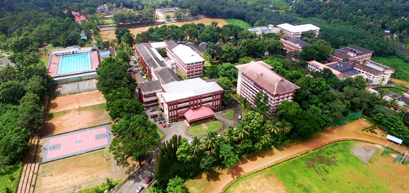
Mar Athanasius College of Engineering, popularly known as MACE, has been pioneering engineering education in Kerala since 1961 and is one to the top engineering institutions in the state. The students admitted here constitute the top 5 percentile of ranks in the Common Engineering Entrance Examination conducted by the Govt. of Kerala. Its managed by the Mar Athanasius College Association and aided by the Government of Kerala. The college offers B.Tech course in the following 5 fields of engineering: Mechanical, Civil, Electrical and Electronics, Electronics and Communication and Computer Science Engineering. Apart from these courses, there are also Post Graduation Courses which are inclusive of M.Tech, MCA, and Ph.D.
Set on a hilltop of a low lying mountain in the beautiful and green town of Kothamangalam, also known as the gateway to the hills, MACE lies en route and on the foothills of Munnar, a hill station in the western Ghats popular for vast spread of scenic tea plantations, beautifully designed township, recherché flora and fauna, massive peaks and dams. The institution is also in close proximity with Kochi, a major financial and cultural hub of Kerala, which is inclusive of the Jewish establishments of historic significance and home to the Kochi-Muziris Biennale.
MACE MUN
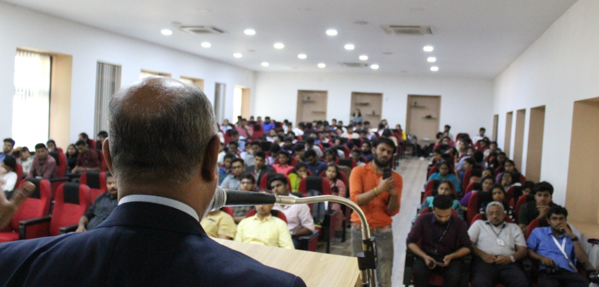
Over the past six years, Mar Athanasius College of Engineering, Kothamangalam, Ernakulam, Kerala in association with the online all student-run College Newsletter, THE MACE POST, has been organizing the MACE Model United Nations (MACE MUN) Conference. Selected committees of the United Nations are simulated with specified country matrices per committee. An agenda addressing a real world concern which plagues the idea of peaceful existence of the global citizens will be decided upon by the judges of each committee, hereafter referred to as the Executive Board. Interested candidates will apply and will be allotted a country each based on the aforementioned matrices per committee and also their experience. These allotted candidates , hereafter referred to as delegates , will have to extensively research their country's stance on the agenda. Also, they will have to master their country's foreign policy and the act of diplomatic debate. They will have to research and present their country's concerns and proposed solutions ( adhering to their national interests as well ) with the seriousness of an actual delegate of the United Nations. Parallely, to keep up with the proceedings of the committees, another faction of participants, hereafter referred to as the members of the International Press (IP) will be in charge of documenting the proceedings of the conference. The IP will be headed by the Head of the International Press, Editor in Chief and The Head of the International Press Photography. The Delegates, International Press Photographers and Reporters will be judged by the Executive Board, Head of International Press Photography ,Head of International Press and Editor in Chief respectively, on the basis of their performance in committee.
We are back this time with the much awaited Seventh Edition, MACE MUN 2020, aimed to scale higher and amalgamating a perfect blend of Diplomacy, Debating and Display of leadership skills at its finesse by endorsing the ability to APPREHEND the crises at hand, ACKNOWLEDGE everyone's stances, faults and solutions and ACCORD in good will.
Committees

 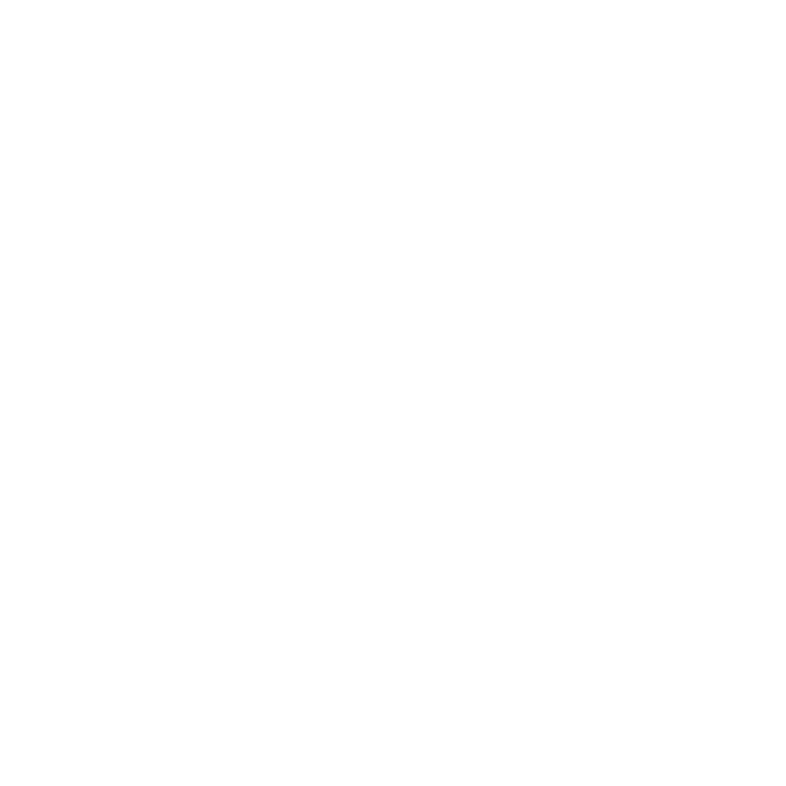
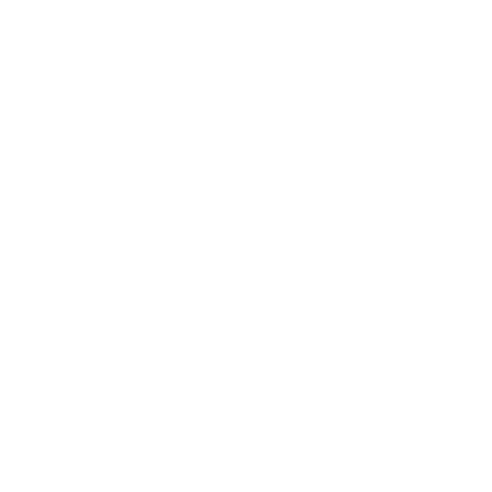


United Nations Office on Drugs and Crime
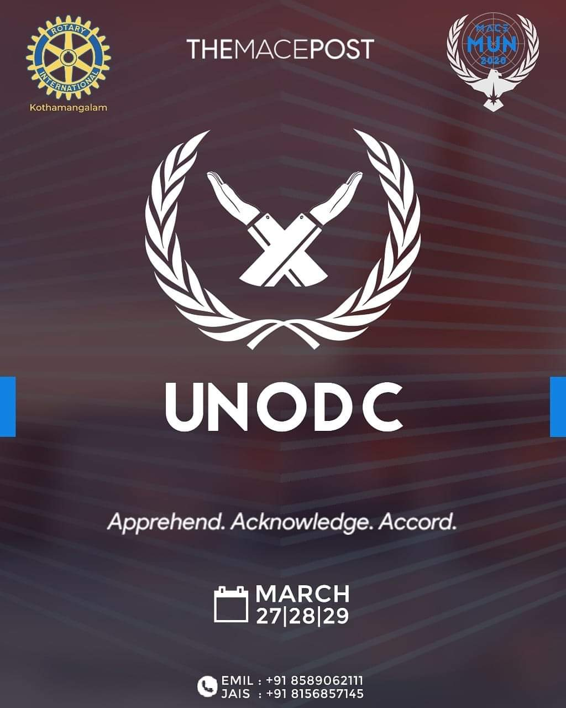
The unrelenting torrents of crime are kept at bay by the guardians of peace and justice. Transnational organised crime and the illicit trade of drugs has become a major threat to world peace and if not kept in check will tear the world apart. This is the mandate of the United Nations Office on Drugs and Crime (UNODC).
A committee that challenges the Delegates in ways that are unheard of in other committees. A committee where there is a very fuzzy line between allies and enemies. A committee that needs you to bring your A game.
Historic Security Council
The Jericho Trumpets, employed on the Stuka, one of the most iconic tactics employed by the Germans in WW2, represented a major propaganda victory over the Allied forces.
The banshee scream it uttered struck terror into the hearts of even the most gallant. And the call to arms it symbolises echoes through the annals of history, even today.
The one that remains deadlocked over issues that threaten to destabilize the fragile peace that the UN represents. The United Nations Security Council (UNSC) is the UN's most powerful body, with primary responsibility for the maintenance of international peace and security.
This is their call to action, their call to arms, their chance for redemption.
The siren calls. Your move.
All Kerala Political Party Meet
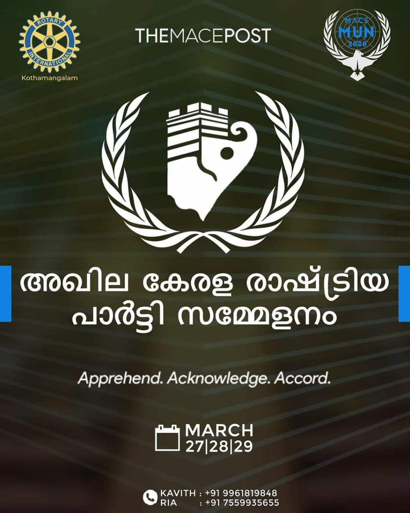
ന്യായമുള്ള നയങ്ങളെ നിയമങ്ങളാക്കുന്നതിൽ നാം എന്നും മുന്നിൽ തന്നെ.
പ്രജാ ഹിതങ്ങൾക്ക് പ്രാധാന്യം നൽകിപ്പോന്ന ശ്രീമൂലം തിരുന്നാൾ വാണിരുന്ന കാലത്ത് തിരുവിതാംകൂറിൽ ആദ്യമായ് നിയമ നിർമ്മാണ സഭ രൂപം കൊണ്ടത് മുതൽ വർഷങ്ങൾ നീളുന്ന പാരമ്പര്യം പേറുന്നവർ.
അസ്വാതന്ത്ര്യത്തിന്റെ കൈവിലങ്ങുകൾ അഗ്നിക്കിരയാക്കി പിറന്ന മണ്ണിനു വേണ്ടിയുള്ള ഒരു ജനതയുടെ എണ്ണമറ്റ മുറവിളികളുടെയും നിരായുധസമരമുറകളുടെയും ആകത്തുകയാണ് ഇന്ത്യൻ സ്വാതന്ത്ര്യം.വ്യത്യസ്തകളെ അതിന്റെ തനിമ ഒട്ടും ചോരാതെ തന്നെ സ്വാംശീകരിച്ഛ് ഭൂരിപക്ഷവും ന്യൂനപക്ഷവും കയ്യോട് കൈ ചേർത്ത് മനുഷ്യനായി
ജനിച്ച എല്ലാവർക്കും ഒരേ നീതി നടപ്പാക്കുന്ന ജനാധിപത്യം.
ജന ഹിതങ്ങളറിയുന്ന ഒരു നല്ല ജന പ്രധിനിധിയെ നിങ്ങൾ നിങ്ങളിൽ കാണുന്നുണ്ടോ?
നിയമ നിർമാണത്തിനായി സംഭാവന ചെയ്യാൻ നിങ്ങൾക്ക് നിങ്ങളുടേതായ ആശയങ്ങളുണ്ടോ?
സ്വയം ഒരു നല്ല നിയമ നിർമാതാവാകാൻ നിങ്ങൾക്ക് സാധിക്കുമോ?
എന്നാൽ ആശയങ്ങളെ ആയുധമാക്കാൻ അഖില കേരള രാഷ്ട്രിയ പാർട്ടി സമ്മേളനത്തിൽ പങ്കുചേരു!
United Nations General Assembly Disarmament and
International Security Council
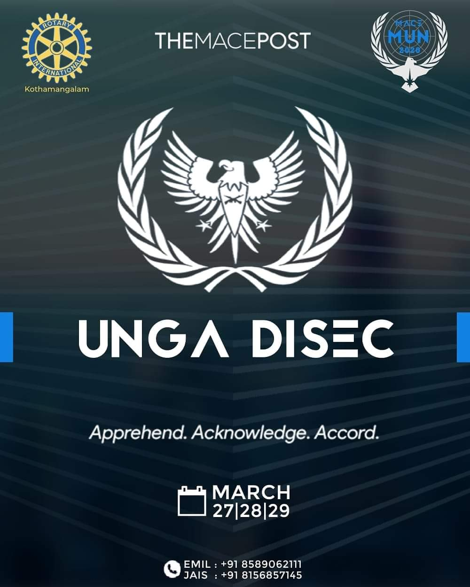
The one who holds back the tempestuous nature of man, the voice of reason amidst the clamor for violence.
The United Nations General Assembly Disarmament and International Security, better known as the First Committee, deals with issues regarding the promotion, establishment, and subsequent maintenance of global peace while simultaneously working to prevent weapons proliferation.
The bread and butter of MUN'ers everywhere, the UNGA DISEC offers delegates the opportunity to discuss burning questions at the forefront of international relations, both hostile and amicable.
World Health Assembly
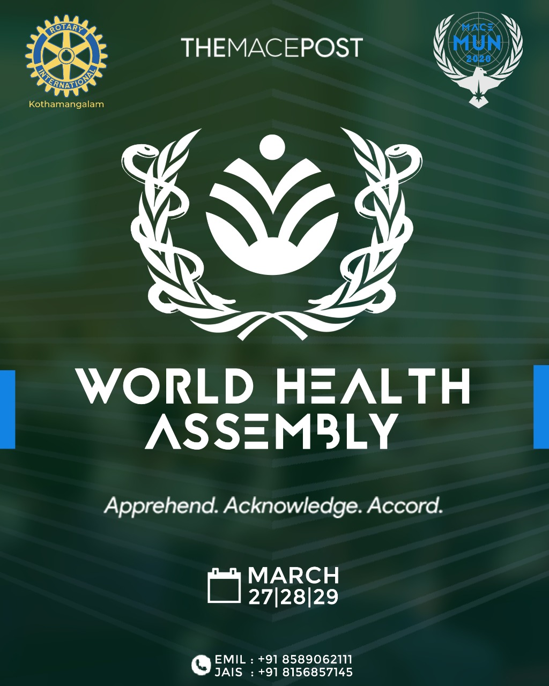
"Ring-a-round the rosie,
A pocket full of posies,
Ashes! Ashes!
We all fall down."
A nursery rhyme that brings back fond memories. But metafolklore tells another tale, one of sickness and death, of anguish and despair, of a struggle to ward off the Black Death, lurking behind the flimsy veneer of an innocent folk song. A bit too grim, perhaps? Regardless, it is a symbol of mankind's unquenchable will to survive, to hope when all seems bleak, and to rebuild from the ashes.
The World Health Assembly(WHA) is a specialized agency of the United Nations that is concerned with international public health and is a member of the United Nations Development Group.
The WHA's primary role is to direct and coordinate international health within the United Nations system. Its Constitution reaffirms this, "the attainment by all people of the highest possible level of health".
INTERNATIONAL PRESS
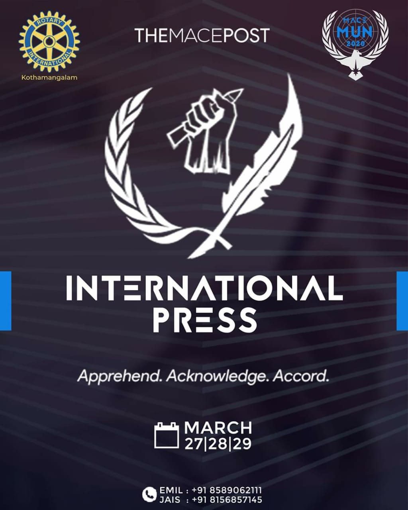
There have always been attempts by those in power to eradicate the truth and impose a narrative that conforms to their desires.
'History is written by the victors', after all.
Yet, over the ages, around every socially and politically divisive conflict, there have always existed counter-narratives that seek to subvert history as we know it, a karmic balance that some have phrased, 'the truth will out'.
As these two conflicting proverbs contest the other's validity, we are left in a curiously solipsistic state of existence, unsure if everything we assume to be true is in fact, a lie.
After all, everyone's an unreliable storyteller.
The International Press, the committee of reporters and photojournalists who wield the true authority in a committee, the ones who often cause delegates to quake in their boots and who are tasked with bringing council proceedings to the public.
Come tell your version of the truth.
Executive Board
United Nations Office on Drugs and Crime
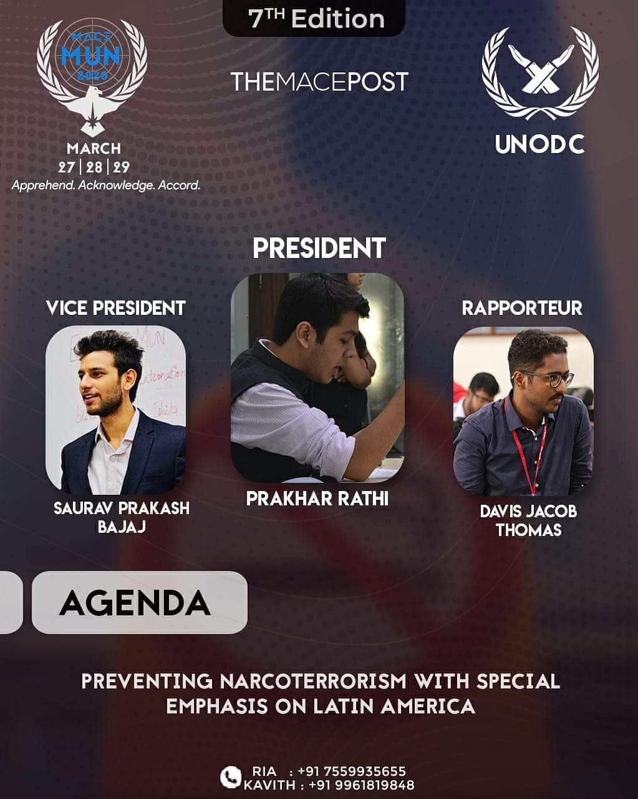
A second year Computer Science Student who has been into MUN's for the past four years, he firmly believes that discourse on an issue is the only way to solve it and platforms like these provide an ideal opportunity to do the same. He believes that logic and law are the strongest tools in a committee. A balance of passion and profession is his motto in life and he’s combined both of them to create his start-up called DebateAround, helping individuals in the field of debating and MUNs." We present to you the President of the UNODC, Prakhar Rathi.
A person who holds diligence and altruism with high regard, and who is currently a fourth year law student at Amity Law School, Delhi, Saurav has a keen interest in studying about child rights. For the past three years he has served people by guiding them how to represent themselves as a diplomat in a simulation. He wishes to create a calm environment with his presence for the prosperity of participants. As a person having a dedicated heart towards his passion to learn and teach he expects the participants not to feel intimidated and consider the whole experience at MACE MUN as elucidative. We present to you the Vice-President of the UNODC, Saurav Prakash.
Known throughout the Kerala circuit, he is a man who prefers a good intellectual debate over a cup of coffee, and is more fondly referred to as djtom. Don't let his short stature fool you. His unimposing looks and happy go lucky attitude hides a charisma and intelligence that makes him one of the greatest minds in the college. Chief Editor of the Mechanical Department Newsletter, Captain of the SAE Aero Design Team (Micro), Takshak 2019 Documentation Head and a veteran of several MUN's, his strong views regarding migration policies and his diplomatic overtures have many a time roused a committee with applause.
We present to you the Rapporteur of the UNODC, Davis Jacob Thomas
Historic Security Council
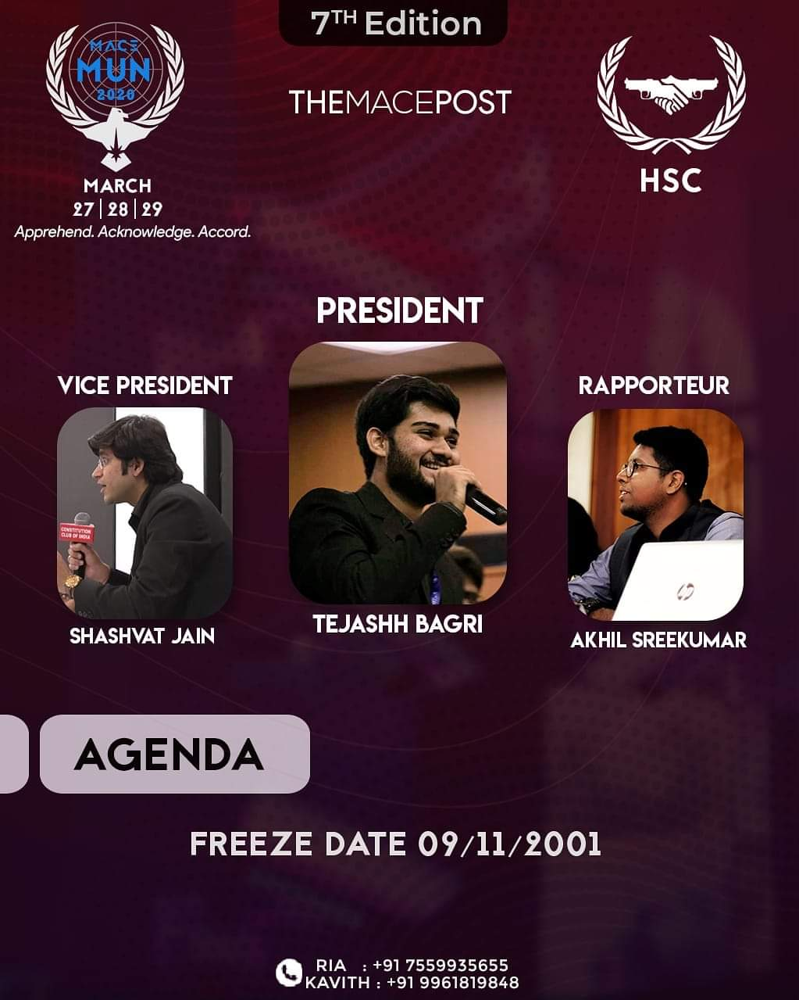
Wise and witty is a rare combination, and he has got it all. With an experience of over 30 model United Nations conferences, Tejashh Bagri is one of the most respected members in the circuit. He is currently pursuing his Bachelor’s degree in engineering at SRM Institute of Science and Technology and serving as the Secretary General for SRMMUN 2020. His unquestionable passion and an ever-growing will to bring a change are two of the three reasons which make him the most approachable Executive Board member. With him on the dais, we are assured that the delegates will bring out their best performance and make the simulation a successful one.We present to you the Chairperson of the Historic Security Council at MACEMUN 2020, Mr. Tejashh Bagri!
He is a 2nd year law student, member of 2 Organizations, Poet, Animal Rights Activist and an aspiring Lawyer cum Politician. Skilled Debater and passionate Mooter, he has been chaired MUNs throughout the country, notably at AMU.
From taking the Indian Flag to the Lal Chowk all alone to filing an RTI against the authorities, he has always been fearless in his actions, attempting to continue the legacy left behind by his grandfather, a fearless poet himself.
Currently a PLV with DSLSA and Intern at DHC, spending most of his time in real courts, he has a positive and unique outlook towards life, often reflected in his committees.
Known for his eloquence, wit and deep understanding of the matter concerned, he considers himself to be a novice who still has a lot to learn from the world. Introducing to you all, The Vice-Chairperson of Historic Security Council,
Mr. Shashvat Jain.
A single minded individual with a heart of gold, with an indefatigable drive to better himself, Akhil is a man of many facets.
Fondly called ASK by professors and students alike, he is an accomplished MUN'ner, with over eight of them under his belt, and is a force to be reckoned with, especially when he plays his famed role as an IP reporter.
He manages to juggle his myriad responsibilities, from being the SEC of the SAE MACE chapter, to being the student secretary for the alumni association with seeming ease.
Most importantly though, he is an unapologetic pistonhead, and with a love of cars that edges out his love for food (just barely), he can talk your ear off with a verse by verse rendition of any episode of Top Gear that you'd dare to quiz him on, replete with Jeremy Clarkson's sarcastic wit. Presenting the esteemed Director of the Historic Security Council, Mr. Akhil Sreekumar
All Kerala Political Party Meet
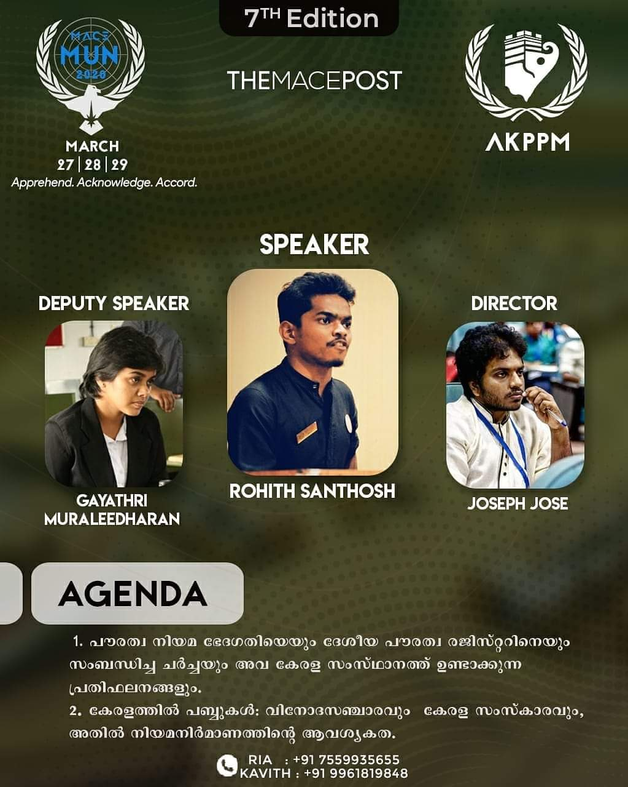
With humble beginnings, he quickly rose through the ranks becoming the General Secretary of the VITC Debate Society (2016) and soon after, its President (2017), as well as becoming the Office Bearer of the VITC University Student Council (2017). He founded and was the maiden Secretary General of the VITNESS Leadership summit (2016). He also founded the VITNESS PARLIAMENTARY DEBATE(2015), one of the two regularly hosted Parliamentary Debates in the Chennai circuit. A debater par excellence, he has attended over 70 MUN Conferences and Debates across India in the capacity of a debater, delegate and an EB member. Despite his plethora of achievements, he portrays a coy attitude and is always welcome to constructive criticism. On a usual day you could find him vigorously criticising the establishment, often times in the company of a chilled beer. Ladies and Gentlemen, we present the Speaker of AKPPM, Mr. Rohit Santhosh.
Gayathri, a lawyer of irrefutable wits, is an unstoppable presence be it any council. Behind her charming smile and benign persona is a nuanced, discerning and convincing MUNner who not only puts forward jaw dropping arguments, but also pursues pragmatically useful solutions. Her unwavering patience and indomitable willingness to empower is everything and more an EB member needs. With unabashed pride, we present to our Deputy speaker for the AKPPM, Advocate Gayathri Muraleedharan
Pursuing his bachelors in Mechanical Engineering from Mar Athanasius College of Engineering, Joseph Jose isn't an unfamiliar face in the Kerala MUN circuit. Starting off with his MUN career 2 years back in his home turf MACE MUN, he has attended MUNs across the Kerala, Chennai and Bangalore circuits. You would often find him meeting new people and relaying them information regarding the upcoming MACEMUN as that's what he does best! Currently serving as the USG (Publicity) for MACEMUN 2020, We are proud to have Joseph Jose as the Director for AKPPM at MACE MUN 2020
United Nations General Assembly Disarmament and
International Security Council
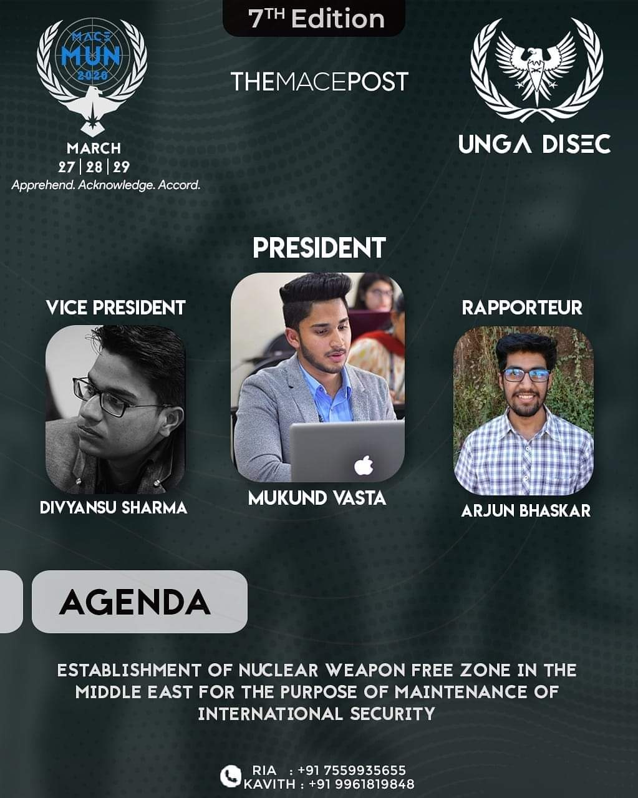
Mukund is currently pursuing his single cycle master’s degree in Medicine and Surgery from the University of Milan, Italy. Coming from one of the rarer tangents in the circuit of debate, it is his passion to be part of different types of structures and formulated MUN simulations all across the world. Model United Nations for him is a lot like an egg, you can do whatever you want, depending on your appetite. Toss it on a pan, flip it a little and get an omelette or even if you do mess it up a little in between, rest assured you have some great scrambled eggs for you, there is no way you’re gonna go starving. Model United Nations is exactly like that. You do great, you get to inspire people, you don’t do that great and you end up with the missing ingredients in your recipe, to inspire yourself in the future. We present to you, with great aplomb, Mr Mukund Vasta, the President of UNGA DISEC.
Divyanshu Sharma is pursuing his bachelor's from the prestigious National Institue of Technology, Jalandhar (Punjab), still awaiting for coming out fresh from the well of engineering !
"Love at first sight", he can't think of anything else to better explain his romance with MUNs. With esteem knowledge of international affairs and super wit on Indian Politics he has legitimately conquered many Model United Nations conferences and Youth parliaments. Being the representative and founder of the Model United Nations Club ( CDC, NITJ) of NIT Jalandhar, Divyanshu firmly believes in the principle of perseversance for proving one's mantle and coming out legitimately by learning from one's mistake. May we present to you, the Vice President of the UNGA DISEC, Mr. Divyanshu Sharma.
A normal human being by morning.. A hardcore cricket fan by night. Mr Arjun Bhaskar is the definition of a Kochi kid. A man who in his best nights, can be found wandering the streets of kochi, meeting up with the locals, and partying his heart out. His alter ego though, is a guy who's as much feared as well as respected in committee, who's a veteran of number of MUNs, and who has garnered a reputation of being a no-nonsense dealing individual. Ladies and gentlemen, may we present to you, the Rapporteur of the UNGA DISEC, Mr. Arjun P Bhaskar
World Health Assembly
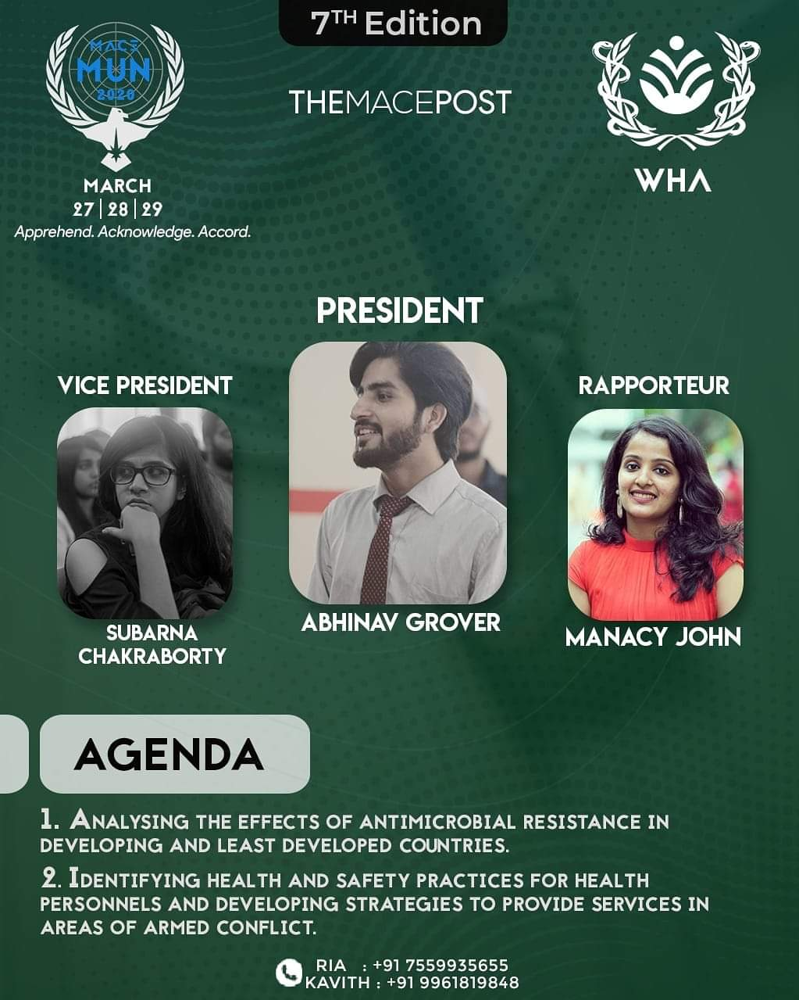
Mr. Abhinav Grover, a Computer Science Engineer hailing from the capital is a versatile person having keen interest in sports, debates and what not. To him, MUNs are an opportunity to practice research, diplomacy, public speaking, teamwork, negotiation, and writing skills in a safe and structured environment. He is very keen and serious about debating and discussing the on-ground reality about the international issues , specifically revolving around the humanitarian conflicts and peace.
He is full of enthusiasm and colours of pragmatism, and we look to experiencing his presence. We present to you the President of the World Health Assembly at MACE MUN 2020, Mr Abhinav Grover!
Subarna Chakraborty, is a fourth year Genetic Engineering student from SRM Institute of Science and Technology, Kattankulathur. She has attended about 20 MUN conferences in the capacity of both a delegate and an executive board member.
Known for her brilliant speeches and impeccable analysis it is safe to assume that she would expect the same from the delegates of her committee . Besides MUNs, she loves dancing and getting herself lost in a book. If you’re looking for her, chances are you’ll find her in the Genetics lab where she spends most of her time. The delegates can expect an extremely accommodating and efficient EB member! We present to you the Vice-President of the World Health Assembly at MACE MUN 2020, Ms Subarna Chakraborty!
An amiable and adorable, tender but strong-hearted character who can become your best friend within minutes, Manacy is someone whom you can count on for anything you ask for. She has won awards in most of the MUNs she's delegated in, largely thanks to her inclination for having face to face conversations over social media chats. She is just as addicted to coffee as she is to unplanned journeys, and so much so to the latter that she may even trade a diamond for spending a sunset at the beachside. She is a sublime singer as well as a pertinent speaker, a food lover but not a foodie, and a shopping-addict : she is Manacy John, Rapporteur of the World Health Assembly
INTERNATIONAL PRESS
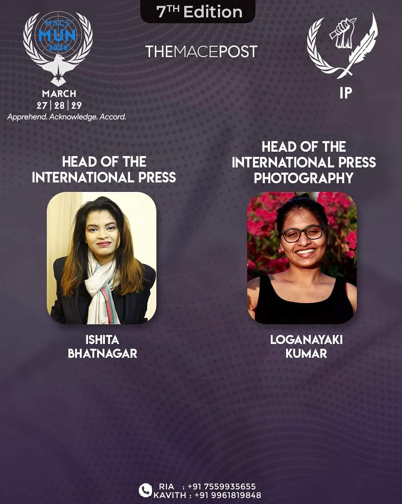
Ishita is a law student, from Amity Law School, Noida who has participated in several Model United Nations Conferences in India. Starting as a delegate in 2012, Ishita has served in various conferences in almost every capacity. She believes that MUN conferences are important as they provide a platform for everyone to share their opinions freely. She aspires to motivate young minds to participate in matters of global critical importance. In her perspective, MUNs not only teach us to debate and negotiate, but they also teach us to be diplomatic, diverse and humble. She has been active in playing sports and film making. She participated in organizing a presentation competition at UNIC, India and volunteered as a mentor under TeachForIndia while teaching students from class 8th to 10th about topics like Climate Change, gender equality & UNSDGs. We present to you, the Head of the International Press, Ms. Ishita Bhatnagar
Loganayaki Kumar(Logi), a third-year Sociology student at Stella Maris, Chennai has attended over 15 MUN conferences as a delegate, photographer and an EB member.
Her vibrant, artistic photography helps her capture your too good to be true moments with ease. If she's not with her camera, you'd find her rewatching episodes of Naruto or practicing in the boxing ring. As someone who has an eye for the harsh realities of everyday life, she is often seen commenting vivdly on the various quagmires of modern society both through her voice and her film. Ladies and Gentlemen, the Head of the International Press Photography, Ms. Loganayaki Kumar